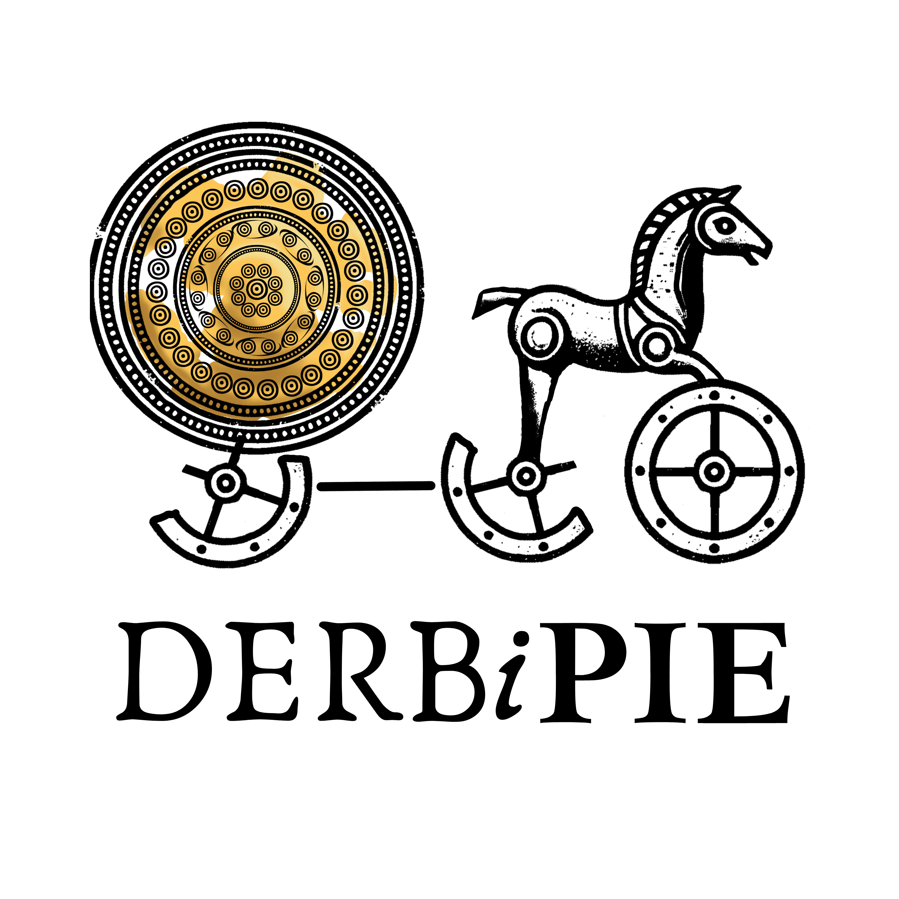

Welcome to 301!
2026-08-24
What is your background in computing?
What would you like to get out of the course?
While this isn’t anonymous, please answer truthfully!
This will help me better understand how to structure the class.
Know how to use a computer and can access the internet;
Know what generative AI is and have used it before.
Aren’t terribly familiar with the command prompt, and perhaps don’t even know what it is;
Have never programmed before;
A formally trained historical linguist (Ph.D. 2010, UCLA, Indo-European Studies)
Specialist in:
Proto-Indo-European & Ancient IE Languages
Historical Phonology
Constructed Languages
A formally trained computer scientist
A formally trained programmer
A formally trained computational linguist
Despite my lack of formal training in programming
Taught self Python, using online courses & resources
Have studied with specialists (like Dr. Fruehwald!) to learn how computational tools can be used in linguistic work
Have managed multiple groups of programmers on a variety of projects

Received funding from the NEH in January 2025 (first try, which is wild, given the 6% acceptance rate!)
Funding pulled with the DOGE-pocalypse in April 2025
What to do? Build the damn thing myself (with a little help)!
With me as your teacher:
Given that I recently learned how to program, this means that I perhaps better understand the issues that a beginner might have;
There may be questions you have that I cannot initially answer, but I will find you those answers.
For you as my student:
You will gain a solid foundation is the fundamentals of programmings and computational tools used by linguists
It’s unlikely that you’ll be able to code at a high level; but… you should be able to code at a higher level with the help of Gen AI.
Broadly speaking, you should be able to understand the advanced code that you use, though not necessarily have come up with it yourself.
Note
“I’m doing my final project on causative constructions (‘make him leave,’ ‘have her call,’ ‘let them go’) in child-directed vs. adult-directed speech. I have two folders of transcribed English text files — one CDS, one ADS. Can you help me figure out how to compare how often causatives show up in each?”
Note
Are you counting only syntactic causatives (make/have/let/get + infinitive), or lexical ones too (like kill, drop)? Are your corpora balanced in size, or will you need to normalize?
I’d tokenize with spaCy, tag POS, define a trigger-verb list, and check for a base-form verb nearby. Then normalize counts per 1,000 words and compare with a bar chart.
One real limitation: this heuristic will misfire sometimes — pull a sample of matches and hand-check them before you trust the numbers.
import os, glob
import spacy
import pandas as pd
import matplotlib.pyplot as plt
nlp = spacy.load("en_core_web_sm")
CAUSATIVE_VERBS = {"make", "have", "let", "get"}
def find_causatives(doc, window=4):
"""Flags a causative trigger verb if a base-form verb ('VB')
shows up within `window` tokens afterward."""
matches = []
for i, token in enumerate(doc):
if token.lemma_.lower() in CAUSATIVE_VERBS and token.pos_ == "VERB":
for wt in doc[i+1 : i+1+window]:
if wt.tag_ == "VB":
matches.append({"trigger": token.lemma_.lower(), "complement": wt.text})
break
return matches
def analyze_corpus(folder_path):
counts = {v: 0 for v in CAUSATIVE_VERBS}
total_words = 0
for filepath in glob.glob(os.path.join(folder_path, "*.txt")):
with open(filepath, "r", encoding="utf-8") as f:
doc = nlp(f.read())
total_words += sum(1 for t in doc if t.is_alpha)
for match in find_causatives(doc):
counts[match["trigger"]] += 1
return counts, total_words
def normalized_freq(counts, total_words, per=1000):
return {v: (c / total_words) * per if total_words else 0 for v, c in counts.items()}
cds_counts, cds_total = analyze_corpus("child_directed_speech")
ads_counts, ads_total = analyze_corpus("adult_directed_speech")
df = pd.DataFrame({
"CDS (per 1k words)": normalized_freq(cds_counts, cds_total),
"ADS (per 1k words)": normalized_freq(ads_counts, ads_total),
})
df.plot(kind="bar", title="Causative Verb Frequency: CDS vs. ADS")
plt.tight_layout()
plt.show()spaCy, pandas, visualization — and just as importantly, judge whether the logic is actually sound.In Linguistics (academia and the private sector, like Google), working with large amounts of data is standard
There are quite a few annoying parts of Linguistics that require special tools, think:
pandas, NLP toolsclone, add, commit, push, pullClasswork (based on attendance): 25%
Homework: 45% (9 total - 5% each)
Final Project: 30% (5 Components)
Attendance: tracked via the Canvas Attendance tool — you get 3 free absences, no questions asked. Beyond that, additional absences may affect your Classwork grade unless excused.
Late work: homework & project components lose 2% per day late (capped at 20% off); still accepted for 80% credit after 10 days late.
AI Policy (the actual rules): permitted for debugging error messages, explaining a concept, and assisting with your Final Project (Components 1–5) — not permitted for generating Homework 1–9 solutions from scratch. Any AI use must be cited (a quick note on where/how you used it).
Accommodations: need support for a diagnosed disability or mental health condition? Reach out to the Disability Resource Center (DRC) any time.
It’s noisy in here.
I’m starving.
I have a car.
It’s noisy in here. (Statement directed towards friend when going inside a crowded room.)
I’m starving. (Statement directed towards friend at 2 pm.)
I have a car. (Statement directed towards friend in response to “How are you getting to the party?”)
It’s noisy in here. (Statement directed towards friend when going inside a crowded room.)
I’m starving. (Statement directed towards friend at 2 pm.)
I have a car. (Statement directed towards friend in response to “How are you getting to the party?”)
Goal: Write instructions that a computer could follow without guessing or filling in missing steps.
Example of “not explicit enough”:
“Put peanut butter on the bread.”
A computer might set the unopened jar on top of the unopened bread bag — that step is technically done. What’s missing: open the jar, pick up a knife, scoop how much, spread it where, on which slice.
Challenge:
I’m sending you a Canvas message with install instructions for VSCode and Git
Follow it the same way we just talked about — explicitly, step by step, don’t assume something happened if you didn’t do it
Should take about 20-25 minutes
Stuck? Don’t fight it for an hour — note where you got stuck and email me. We’ll fix it together on Wednesday, which is a workshop day for exactly this.